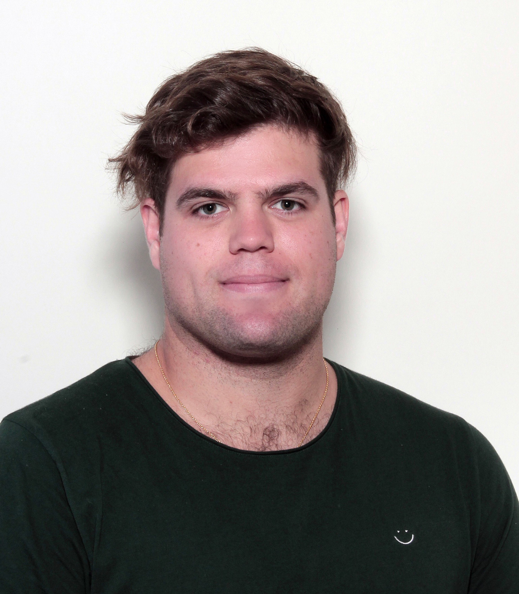

Yossi Bokor Bleile
Geometry. Topology. Data Science.
About Me
I am a matheamtician working in geometric and topological data analysis. Currently, I am a post at the Department of Mathematical Sciences, Aalborg Uni. I completed a Joint PhD at the Australian National University and the University of Sydney, supervised by Dr Kate Turner, Professor Vanessa Robins, Professor Stephan Tillmann and Dr Jonathan Spreer. Before this, I did a Master of Mathematical Sciences at ANU and a Bachelor of Arts (Honours) at University of Sydney.
Contact Us
Email: yossi AT yossi DOT eu
ORCID: 0000-0002-4861-9174
GitHub: yossibokorbleile